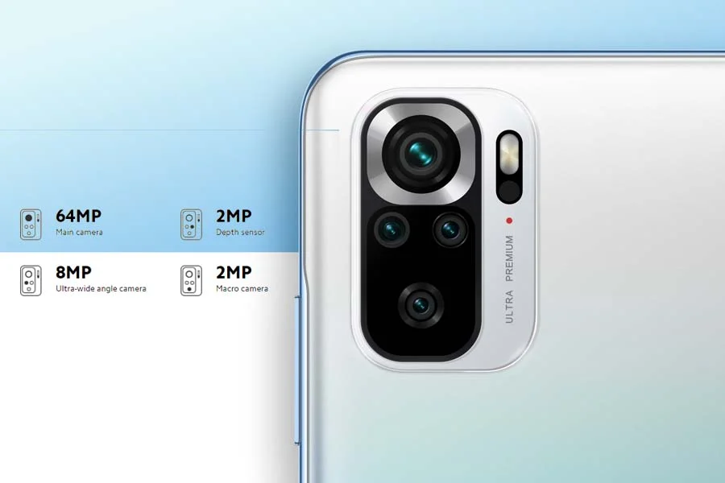

Redmi Note 10S Overview
Design and Display
On the front, the phone has a 6.43-inch AMOLED display with Gorilla Glass 3 protection. This screen features an 8-bit color depth and 1100 nits of peak brightness. It is also IP53 rated for dust-and-splash resistance. Redmi Note 10S comes with a Z-axis haptic motor. Aside from that, it flaunts the Evol design, as seen on the other entries in the Note 10 series.
Performance
Redmi Note 10S is powered by the Helio G95 chipset. As I mentioned earlier, it’s the only phone in the lineup so far to feature a MediaTek processor. This SoC comes with MediaTek’s HyperEngine technology that promises better management of resources (hardware and network) for smoother gameplay.
Complementing the chipset is 6 or 8GB of LPDDR4X RAM, which can be paired with either 64GB or 128GB UFS 2.2 internal storage. You can also expand the latter using a microSD card that gets a dedicated slot in the SIM tray.
Camera
Redmi Note 10S has a quad-camera configuration with a 64MP f/1.79 main sensor leading the setup. This 1/1.97” sensor has individual pixels that measure 0.7µm. It is accompanied by an 8MP f/2.2 ultrawide sensor with a 118º Field of View.
In addition, there are two additional 2MP f/2.4 sensors for macro and portrait shots. The rear camera setup is capable of recording 4K videos at 30fps. You get a 13MP selfie shooter with AI Beautify upfront. It can record 1080p videos at 30fps.
Others
In addition, Redmi Note 10S gets a stereo speaker system for an immersive audio output. The phone also has Hi-Res Audio certification. Fueling the device is a 5000mAh battery that supports 33W fast charging and a compatible charger is included in the box itself.